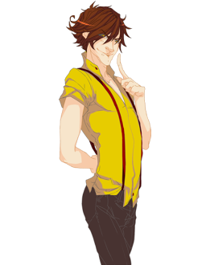

Джек Лондон

Портретная галерея:
Джек Лондон, Лев Ландау, Джон и Роберт Кеннеди. Популярный американский тип, часто изображаемый в рекламе
сигарет "Мальборо". Роберт Вуд, Эрнест Хемингуэй. Героиня романа Ф. Достоевского "Идиот" Настасья Филипповна, Сергей
Эйзенштейн, Лариса Шепитько, Анни Жирардо, Софи Лорен, Екатерина Васильева, Анастасия Вертинская, Эдита Пьеха,
Георгий Жженов.
Квадральные признаки:
гамма-квадра; серьезный, решительный, демократ.
Диадные признаки:
рациональный (шизотим), уступчивый, беспечный, коллективист.
Индивидуальные признаки:
экстраверт, динамик, деклатим, позитивист, интуит, логик, стратег, эмотивный.
Первая функция - уровень организации личности, или принцип существования. Зона уверенности. "Хорошо"
объектная логика - логика объективного мира, объективные обстоятельства, факты. Методики, статистика.
Реальная связь событий. Моя территория
зона уверенности. Уверен в своих знаниях мира объектов и социальных структур, хорошо разбирается в правилах
уличного движения, юридических кодексах, методиках, статистике, устройстве машин. Стабильность окружающей обстановки
и стабильность того порядка, который уже есть в мире. "Если в моем мире есть порядок, значит, я существую". Порядок
может быть разным, но он должен быть стабилен. "Мой дом - моя крепость" - это про Джека. Дом, близкие, семья
занимают в его системе ценностей значимое место. Дом - это место, где я всегда нужен, полезен.
Никогда человек этого типа не скажет: "Объясните мне". Он скажет: "Покажите мне, дайте мне факты". Ему
нужны объективные данные, на которые он сможет опереться, - таков уровень организации его личности. Если Джеку
требуется изменить что-нибудь в своей картине мира, он исчезает из поля зрения на пару недель, а то и месяцев, после
чего неожиданно появляется уже с другой картиной мира. Но это время он должен провести в одиночестве. Сначала
агрессия, отторжение, потом - раз… и исчез. Такая реакция свойственна Джеку, когда что-то касается первой функции,
что-то связано с логикой его объективного мира, его собственным порядком.
Джек с удовольствием занимается любым делом, которое что-то дает близким или всем людям в будущем. Для него
самый важный критерий деятельности - ее объективная полезность.
Минус-первая функция. Зона игнорирования. Минус-ценности. "Плохо"
субъектная логика - моя собственная логика, мое понимание, объяснение, описание, концепция, теория.
Иерархия представлений о том, что ближе, что дальше, что выше, что ниже. Моя картина мира, мое мировоззрение. Мое
образование, т. е. система моих образов, моя школа
Джек - прирожденный практик, экспериментатор, предприниматель. Он скорее разберется сам, чем будет слушать
чьи-то объяснения. Никогда не доверяет теории, пока сам на опыте не почувствует ее справедливость. Никогда не
признает ценности концепций, не проверенных практикой. Большие сложности возникают у него при попытке осознания
собственного описания мира, а также его изменения. Теория имеет смысл, если она практична, иначе она не нужна.
Никогда не занимается теоретизированием в отрыве от реальности. Именно в этом ключе работала в свое время школа
теоретической физики Л. Д. Ландау.
Вторая функция. Творческая. Уровень функционирования. Зона риска. "Надо"
субъектная интуиция - целостность внутренней ситуации. Внутренняя гармония. Состояние, настроение, чувство
времени
творчество проявляется в свободной манипуляции внутренней ситуацией. Например, человек сидит и вроде бы
ничего не делает, а в действительности он решает что-то внутри себя. Он входит в какие-то состояния, которые
большинству людей других типов совершенно недоступны.
Объем психологического пространства в области творческой функции у Джека существенно больше, чем у людей
других типов, у которых этот элемент ИМ не на творческой функции.
Когда человек одного типа ИМ говорит о каких-то нюансах, связанных с творческой функцией, для других типов
ИМ это может быть интересно, но совершенно непонятно. Здесь часто возникает непонимание, связанное с тем, что,
общаясь с помощью одних и тех же понятий, одних и тех же слов, люди подразумевают за этими словами совершенно разный
объем. Это непонимание иногда является принципиальным. Его очень сложно объяснить. Это все равно, что, допустим,
филиппинец будет рассказывать про рис европейцу. На Филиппинах в языке хануноо есть более 90 слов, обозначающих рис,
а у европейцев - одно. При переводе колоссальный объем этого понятия исчезнет совершенно незаметно и для тех и для
других. Так же и здесь: творческая функция раскрывает очень большой объем определенного элемента ИМ, этот же элемент
на другой функции порождает объем значительно меньший. Иногда люди не понимают друг друга не потому, что они глупы
или негативно настроены, а просто потому, что им нечем: в их описании мира нет соответствующей этому объему
структуры.
Джек, как правило, не рвется в артисты, у него творчество проявляется как-то по-другому. Он может,
допустим, уйти на охоту на четыре месяца куда-нибудь в тайгу, и для него это нормально (по романам Джека Лондона это
хорошо видно). Он может находиться в разных состояниях, в которые человек попадает в силу обстоятельств на охоте:
без еды и питья, в голоде и холоде. Ему никто не нужен здесь. Этому типу, возможно, легче других дается состояние
самодостаточности, тем более, что внешние отношения у него - в зоне страхов. Есть типы, для которых это невозможно,
а для Джека - совершенно нормально. Он может быть в одиночестве долгое время. У меня есть приятель, который живет на
лесном кордоне лесником. Ему спокойно и нескучно. Он там один.
Василий Максимов, довольно известный человек, один из первых и, с моей точки зрения, лучших переводчиков
Карлоса Кастанеды, тоже ушел 20 лет тому назад в лес и жил там на кордоне. Так у Джека реализуется творческая
функция. А вот Наполеон там, наверное, долго не выдержал бы, да и Дон Кихот, пожалуй, тоже. А Гамлет, как бы он там
жил? Без рампы?! А Дюма, с кем бы он там разговаривал? С лосями? Правда, Дюма-отец, когда создавал свои бессмертные
романы, запирался в своем замке и даже поднимал мост. Но он был со своими персонажами, а это несколько другое.
Минус-вторая функция. Зона нормативов, эталонов, стереотипов поведения. "Не надо"
объектная интуиция - целостность внешней ситуации. Последовательность событий от начала до конца, ряды
событий, расписание. Потенциальные возможности. Программа поведения, уклад, ритм жизни. Сценарий какого-либо
действия, партитура
зона нормативов - целостность внешней ситуации. Для Джека - это внешний распорядок. Это, пожалуй, один из
немногих типов, который вполне комфортно чувствует себя, работая на конвейере или выполняя иную рутинную, но
полезную работу. С другой стороны, это зона "не надо", поэтому Джек легко может уйти от всякого распорядка, в ту же
тайгу на пару месяцев. В жизни он старается найти себе ситуацию, где нет необходимости следовать внешнему
распорядку, укладу (одна из распространенных сейчас реализаций - свободный предприниматель).
Скажем так: по этой функции человек подчиняется, принимает нормы, хотя, возможно, он и не восторге от
этого.
Третья функция. Принцип самооценки. Место наименьшего сопротивления. "Проблемы"
объектная сенсорика - форма, действие, движение, поступок, внешность, жесты и мимика. Воля. Мое умение,
сила, влияние, деньги, имидж
самооценка строится на форме, действии, умении что-то делать своими руками. Моя внешность, мое умение, мое
действие.
Джек - это почти всегда умелец. Это тоже в каком-то смысле упрощение ситуации. Здесь он имеет точное
знание: "Я что-то могу" (по третьей функции вообще важно иметь точное знание). Для него это не только мастерство как
таковое, но и дополнительный экзистенциальный выигрыш - плюс-подкрепление по третьей функции, а по сути - энергия от
социума. В плане одежды возможен вариант: яркий пиджак и клетчатые брюки. Это, однако, не обязательно, защита может
быть и "в минус". В этом случае Джек ходит несколько растрепанным, как бы подчеркнуто не обращая внимания на
внешность. Однако и в этом ощущается некоторый свой стиль. Даже если он одет в лохмотья, все будет гармонично и
продумано. В любом случае, его заботит, как он выглядит.
Джек нередко обладает незаурядной физической силой, часто серьезно занимается спортом. Выглядит он, по
крайней мере, весьма спортивно (американские президенты), неплохо плавает, стреляет, водит автомобиль.
И еще одна особенность - Джек всегда при деньгах. И это я также связываю с принципом самооценки: я хороший,
если я сильный, если я все умею, если у меня есть деньги.
Минус-третья функция. Зона решения проблем
субъектная сенсорика - мои внутренние ощущения: вкусовые, тактильные, сексуальные. Самочувствие, состояние
здоровья. Приятно - не приятно
Если я чего-то не могу, если моя форма не соответствует моим представлениям о том, каким я должен быть, то
надо что-то делать со здоровьем, возможно, показаться специалисту, полечиться. Но Джек, в отличие от Гамлета, будет,
скорее, что-то активно делать сам: закаляться, обливаться водой, т. е. заниматься своим здоровьем ("Чтобы я это мог,
надо тренироваться"). Нужна сенсорная надежность. Джек любит ходить в походы с преодолением каких-то препятствий
(горный туризм, альпинизм). С удовольствием занимается техническими видами спорта. Он обращает внимание на свое
здоровье в основном только тогда, когда появляются проблемы именно в области третьей функции, т. е. возникает
ситуация: я чего-то не могу. В этом случае он начинает укреплять свое здоровье, заботиться о нем.
Четвертая функция. Суггестивная. Принцип оценки места. Мотивы. "Хочу"
субъектная этика - Мое отношение к людям. Люблю кого-то или что-то - не люблю, нравится - не нравится. Мои
эмоции
здесь человек открыт для внушений: "О моем отношении к чему-либо или к кому-либо мне должны рассказать
другие люди. Люблю я или не люблю - знают другие, и они должны мне об этом рассказать. Сам я не знаю, не уверен".
Ему трудно сформировать свое мнение на пустом месте. Поэтому, для того чтобы выработать свое отношение к чему-либо,
нужны какие-то объективные данные, какая-то достоверная информация: "Люди лучше знают, им виднее". Необходимы
какие-то источники знаний, сведения, на которые можно опереться.
Близкие могут сильно влиять на его отношение и через это весьма удачно им манипулируют. Хорошее место - это
дом, в котором любимые родные люди, да еще узкий круг надежных старых друзей и природа, природа, природа.
Как правило, у людей на четвертой функции работают жесткие программы, автоматизмы, стереотипы, которые не
меняются на протяжении многих лет.
Минус-четвертая функция. Зона страхов. "Не хочу"
объектная этика - Внешние отношения. Отношения людей между собой и отношение людей ко мне. Эмоции других
людей
страх внешних отношений. Джек, как уже было сказано, может просто уйти один в тайгу на полгода. Потому что
все эти отношения… от них только беспокойство одно. Конечно, мы все живем в социуме, и у всех есть какие-то
отношения, по крайней мере, на уровне конвенциональных. У Джека при этом есть какое-то внутреннее подсознательное
желание отстраниться: "Не надо, чтобы ко мне как-то относились. Если я - начальник, то пусть они подчиняются, но это
совсем не значит, что ко мне надо как-то относиться. Не нужно это. Я - начальник, извольте подчиняться".
Когда ему признаются в любви, он пугается. Лучше как-то пошутить или что-нибудь подарить (букетик, скажем).
Одним словом, лучше сделать какой-то понятный жест, почему обязательно нужно что-то такое высказывать? Близкие
отношения только с небольшим кругом людей, как правило, это семейный круг и двое-трое друзей.